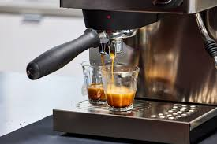

What is Coffee? Method of making,Types,& More
Coffee is a beverage prepared from roasted coffee beans.The roasted and ground seeds of the tropical evergreen coffee plant are used to make coffee. Among the top three drinks consumed worldwide, coffee is also one of the most lucrative commodities traded internationally.Although coffee is the base for a plethora of drinks, such as lattes, espresso, cappuccinos, and mochas, its appeal is mostly due to the stimulating impact that caffeine, an alkaloid found in coffee, produces.
I'm passionate about coffee and want to know everything there is to know about it. I created this tutorial to assist us become fully informed about the fundamentals of coffee.
What you will find here:
Key points
- Coffee is a beverage made from roasted or unroasted beans
- There are 4 main types of coffee beans
- 3 different types of coffee processing methods
- 3 different types of roasts
What is Coffee?
Coffee is a beverage brewed from roasted or unroasted coffee beans.The beans are found inside the fruit (commonly known as cherries) of the Coffea plant. There are many varieties of coffee beans, each with unique flavors, aromas, and characteristics.
Conditons to grow coffee beans
Growing a coffee plant requires specific environmental conditions to ensure healthy growth and optimal bean production. The main factors that influence coffee cultivation are climate, soil, altitude, water, and shade.
Here’s a detailed look at the conditions needed to grow coffee:
-
Climate
- Temperature: Coffee plants thrive in temperatures between 15°C and 24°C. Temperatures that are too high above 30°C or below 10°C can stress the plant, affecting growth and bean quality.
- Rainfall: Coffee plants need a good amount of rainfall, typically between 40 to 100 inches annually
- Humidity: Moderate to high humidity levels are ideal, especially for Arabica coffee, which requires a more stable and moderate climate compared to Robusta.
-
Soil
- Type: Coffee plants prefer well-drained, fertile soils rich in organic matter. Loamy soils with good aeration are ideal. Volcanic soils are particularly well-suited for coffee due to their high mineral content.
- pH Level: A slightly acidic to neutral pH level of 6 to 6.5 is optimal for coffee growth. Extremely acidic or alkaline soils can hinder nutrient absorption.
- Drainage: Good drainage is crucial as coffee plants are sensitive to waterlogged conditions. Poor drainage can lead to root rot and other diseases.
-
Altitude
- Optimal Range: The ideal altitude for coffee cultivation varies by species. Arabica coffee grows best at higher elevations, typically between 600 to 1,800 meters above sea level. Robusta coffee can grow at lower elevations, from sea level to about 600 meters.
- Impact on Flavor: Higher altitudes are generally preferred for Arabica coffee because the cooler temperatures slow down the growth of the coffee cherries, resulting in denser beans with more complex flavors and acidity.
-
Water
- Irrigation: While coffee plants need a steady supply of water, they should not be overwatered. Adequate irrigation during dry periods is essential, especially in regions with irregular rainfall.
- Water Quality: The quality of water used for irrigation is also important. Clean, fresh water without high levels of salinity or contaminants is ideal for coffee plant health.
-
Shade
- Shade-Grown Coffee: Coffee plants, benefit from being grown under a canopy of shade trees. Protecting them from direct sunlight and reducing temperature extremes.
- Benefits:Shade helps maintain soil moisture and protects plants from pests and diseases. It also improves coffee quality by allowing the beans to mature more slowly, enhancing their flavor.
-
Wind Protection
- Shelter: Coffee plants are susceptible to damage from strong winds, which can cause physical damage to the plants and reduce yield.
- Windbreaks, such as rows of trees or shrubs, are often planted around coffee plantations to protect the plants from strong winds.
-
Planting Density
- Spacing: Proper spacing between coffee plants is crucial to ensure adequate air circulation, light penetration, and nutrient availability.
- Overcrowded plants can lead to increased competition for resources and a higher risk of diseases and pests.
-
Pest and Disease Control
- Management: Coffee plants are susceptible to a variety of pests and diseases, such as coffee leaf rust, coffee berry disease, and the coffee borer beetle.
- Effective pest management strategies, including regular monitoring, organic and chemical treatments, and resistant plant varieties, are essential for healthy coffee cultivation.
Types of Coffee beans
Coffee beans come from the seeds of coffee cherries produced by the Coffea plant. There are several types of coffee beans,but most commonly use are four(Arabica,Robusta,Liberica and Excelsa).Each type has distinct characteristics that affect the flavor, aroma, and strength of the coffee.
Here’s an overview of each type:
-
Arabica (Coffea arabica):
- Origin: Native to Ethiopia, Arabica is the most popular coffee bean, accounting for about 60-70% of the world’s coffee production.
- Flavor Profile: Arabica beans are known for their smooth, mild, and aromatic flavor. They tend to have a wide range of tastes depending on where they are grown, often including notes of fruit, sugar, and higher acidity.
- Caffeine Content: Generally lower in caffeine compared to Robusta beans.
- Growing Conditions: Arabica plants are delicate and prefer higher elevations, between 600-2,000 meters above sea level. They require a cooler climate and are more susceptible to pests and diseases.
- Bean Shape: Arabica beans are typically oval-shaped with a curved crease.
-
Robusta (Coffea canephora):
- Origin: Native to sub-Saharan Africa, Robusta beans are widely grown in Africa and Southeast Asia, especially in Vietnam, which is one of the largest producers.
- Flavor Profile: Robusta beans have a strong, harsh, and more bitter flavor compared to Arabica. They often have a nutty or woody aftertaste and are less sweet and aromatic.
- Caffeine Content: Higher in caffeine than Arabica, which contributes to its more bitter taste and increased pest resistance.
- Growing Conditions: Robusta plants are hardier and can grow at lower elevations, from sea level to 600 meters. They are more resistant to pests and diseases and can thrive in hotter climates.
- Bean Shape: Robusta beans are rounder and smaller, with a straight crease.
-
Liberica (Coffea liberica):
- Origin: Native to Liberia in West Africa, Liberica beans are not as widely grown or used as Arabica or Robusta.
- Flavor Profile: Liberica coffee has a unique, bold flavor with a smoky, woody, and floral profile. It is often described as having a somewhat fruity and nutty taste.
- Caffeine Content: Lower caffeine content than Robusta but generally higher than Arabica.
- Growing Conditions: Liberica trees are tall and can grow in hot, humid climates at low altitudes. They are more tolerant of harsh conditions than Arabica but less than Robusta.
- Bean Shape: Liberica beans are larger, irregularly shaped, and have a unique, asymmetrical crease.
.jpeg)
-
Excelsa (Coffea excelsa):
- Origin: Once classified as a separate species, Excelsa is now considered a variety of Liberica. It is primarily grown in Southeast Asia.
- Flavor Profile: Excelsa beans have a tart, fruity, and complex flavor profile that adds depth to coffee blends. They are known for their unique balance of light roast traits (like fruity and tart notes) and dark roast traits (such as depth and body).
- Caffeine Content: Similar to Liberica, with moderate caffeine levels.
- Growing Conditions: Excelsa grows in similar conditions to Liberica, thriving in hot, humid climates at lower altitudes.
- Bean Shape: Excelsa beans are similar in size to Liberica beans but are more oval-shaped with a pointed tip.
Espresso Machines
-
What is an Espresso Machine?
A brief explanation of what an espresso machine is, how it works, and its importance in brewing espresso—a concentrated form of coffee with a rich flavor and velvety texture.
- History of Espresso Machines:
A section on the history and evolution of espresso machines, from their invention in the early 20th century to modern advancements in technology.
Types of Espresso Machines:
-
Manual (Lever) Espresso Machines
- Description: These machines require the user to manually control the extraction process by pulling a lever. They offer the most hands-on experience, allowing complete control over the pressure and extraction time.
- Pros: Full control over brewing, which can result in a superior, personalized espresso if used correctly. No need for electricity (in spring-piston models).
- Cons: Requires skill and practice to use effectively. Can be time-consuming and physically demanding.
.jpeg)
-
Semi-Automatic Espresso Machines
- Description: Semi-automatic machines automate some parts of the espresso-making process, such as maintaining water temperature and pressure. However, the user still has to manually start and stop the extraction process and grind and tamp the coffee.
- Pros: Offers a good balance between control and convenience. Allows users to fine-tune the extraction to their preference. More affordable than fully automatic machines.
- Cons: Requires some skill and knowledge of espresso making. More hands-on than automatic machines.

-
Automatic Espresso Machines
- Description:These machines automate more of the brewing process than semi-automatic machines. The user only needs to press a button to start the extraction process, and the machine stops automatically when the shot is ready.
- Pros:Easier to use than semi-automatic machines. Provides consistency in the espresso shot. Good for those who want a bit of control but with more convenience.
- Cons:Less control over the extraction process compared to semi-automatic machines. Can be more expensive than semi-automatic machines.
-
Super-Automatic Espresso Machines
- Description:Super-automatic machines handle the entire espresso-making process, from grinding the beans to frothing the milk. The user just needs to press a button, and the machine does the rest.
- Pros:Very easy to use, highly convenient, and consistent. Ideal for those who want a quick espresso without much effort or skill.
- Cons:Little to no control over the brewing process. Often more expensive than other types of machines. Maintenance can be more complex.
-
Capsule (Pod) Espresso Machines
- Description:These machines use pre-packaged coffee capsules or pods. The machine punctures the capsule and forces hot water through it to make espresso.
- Pros:These machines use pre-packaged coffee capsules or pods. The machine punctures the capsule and forces hot water through it to make espresso.
- Cons:Limited control over brewing variables. Can be more expensive in the long run due to the cost of capsules. Less environmentally friendly due to waste from used pods.
-
Stovetop Espresso Makers (Moka Pots)
- Description:Not technically espresso machines but often used as a substitute for espresso. They brew coffee by passing boiling water pressurized by steam through ground coffee.
- Pros:Affordable and portable. No need for electricity. Produces strong, espresso-like coffee.
- Cons:Does not produce true espresso, as it lacks the pressure required for authentic espresso. Requires some skill to use correctly.
Various Types for Coffee drinks
| Coffee Drink |
Flavor Profile |
| Espresso |
Espresso is strong, concentrated, and has a rich flavor with a thick crema on top. |
| Drip Coffee (Pour-Over) |
Clean, crisp, and aromatic, with distinct flavor notes that vary depending on the coffee beans used. |
| French Press (Press Pot) |
Full-bodied and robust, with a richer mouthfeel since the coffee oils and fine particles are not filtered out. |
| Aeropress |
Versatile; can produce a range of flavors from clean and crisp to rich and full-bodied, depending on grind size, water temperature, and steep time. |
| Cold Brew |
Smooth, mild, and less acidic than hot-brewed coffee, often with chocolatey or nutty undertones. |
| Moka Pot (Stovetop Espresso Maker) |
Strong and rich, similar to espresso but typically with more body and less pressure-induced crema. |
| Siphon (Vacuum Pot) |
Clean, full-bodied, and aromatic, often highlighting complex flavor notes. |
| Turkish Coffee |
Intense and full-bodied with a thick texture; unfiltered coffee grounds settle at the bottom of the cup. |
| Single-Serve Pod Machines |
Varies depending on the pod or capsule used; generally convenient and consistent but may lack the depth of freshly ground coffee. |
| Percolator |
Strong and robust, though it can sometimes lead to over-extraction, resulting in a bitter taste. |
| Vietnamese Drip (Phin Filter) |
Strong and full-bodied, often served over ice with sweetened condensed milk. |
|
|
Coffee Growing Regions
Coffee is grown in specific regions around the world that are located in the "Coffee Belt," a zone that lies between the Tropics of Cancer and Capricorn. The Coffee Belt encompasses parts of Africa, Asia, Central and South America, where the climate and altitude provide ideal conditions for coffee cultivation.
Here’s a breakdown of the major coffee-growing regions and what makes each unique:
-
Central and South America
Brazil
- Overview:Brazil is the largest coffee producer in the world, accounting for about one-third of global coffee production.
- Varieties:Primarily Arabica, with some Robusta.
- Growing Regions:Minas Gerais, São Paulo, Espírito Santo, and Bahia.
Colombia
- Overview:Known for its high-quality Arabica beans, Colombia is one of the top coffee producers globally.
- Varieties:Exclusively Arabica.
- Growing Regions:Antioquia, Huila, Nariño, and the Coffee Triangle (Caldas, Quindío, and Risaralda).
Costa Rica
- Overview:
- Varieties:Primarily Arabica.
- Growing Regions:Antigua, Huehuetenango, Atitlán, Cobán, and Acatenango.
-
Africa
Ethiopia
- Overview:Ethiopia is the birthplace of coffee and is known for its heirloom varieties and unique coffee culture.
- Varieties:Primarily Arabica, often from wild coffee plants.
- Growing Regions:Sidamo, Yirgacheffe, Harrar, and Limu.
Kenya
- Overview: Kenya is known for producing high-quality Arabica coffee with distinctive flavors.
- Varieties:Primarily Arabica, including SL28, SL34, and Ruiru 11.
- Growing Regions:Central Highlands (Nyeri, Kirinyaga, Murang’a), and the Rift Valley.
Tanzania
- Overview:Tanzania produces both Arabica and Robusta coffee, with a focus on Arabica from the slopes of Mount Kilimanjaro.
- Varieties:P Arabica and Robusta.
- Growing Regions:Kilimanjaro, Arusha, Mbeya, and the southern highlands.
-
Asia and the Pacific
Vietnam
- Overview:Vietnam is the world's largest producer of Robusta coffee and the second-largest coffee producer overall.
- Varieties:Primarily Robusta, with some Arabica.
- Growing Regions:Central Highlands, including Dak Lak, Lam Dong, and Gia Lai.
India
- Overview:India produces both Arabica and Robusta coffee, with a reputation for shade-grown, eco-friendly coffee.
- Varieties: Arabica and Robusta.
- Growing Regions:Karnataka, Kerala, Tamil Nadu, and the Eastern Ghats.
Indonesia
- Overview: Indonesia is known for its unique processing methods and diverse coffee-growing regions.
- Varieties:Arabica and Robusta.
- Growing Regions:Sumatra, Java, Sulawesi, and Bali.
-
Other Notable Regions
Yemen
- Overview:Yemen has a long history of coffee production, known for its traditional, natural drying process.
- Varieties:rimarily Arabica.
- Growing Regions:Haraz, Bura'a, and Al-Hayma.
Hawaii (United States)
- Overview: Hawaii is the only U.S. state that grows coffee commercially, primarily on the Big Island.
- Varieties:Arabica, including Kona Typica.
- Growing Regions:Kona, Ka’u, and Puna on the Big Island.
Benefits and Dangers of consuming Coffee
| Benefits |
Dangers |
| Enhanced Cognitive Function and Alertness |
Sleep Disruption |
| Antioxidant Properties |
Addiction and Dependence |
| Reduced Risk of Certain Diseases |
Digestive Issues |
| Improved Physical Performance |
Increased Heart Rate and Blood Pressure |
| Potential Protective Effects Against Certain Cancers |
Bone Health |
| Reduced Risk of Depression |
Anxiety and Jitters |
They say:
"Coffee is a language in itself." — Jackie Chan
Does Coffee Make You Poop?
Coffee does make you poop because it may trigger contractions in your intestinal lining and colon.
Conclusion:
Learning the basics about coffee is just the beginning. If you’re like me and on a quest to create the best-tasting coffee drinks, you’ll need to dive much deeper into the details.